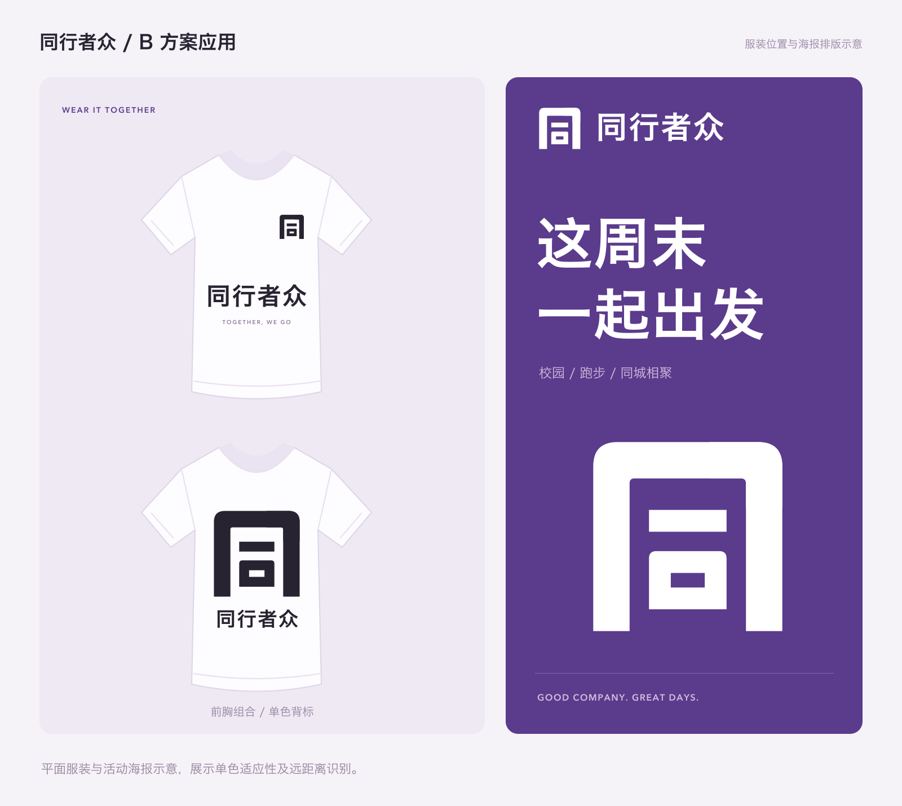
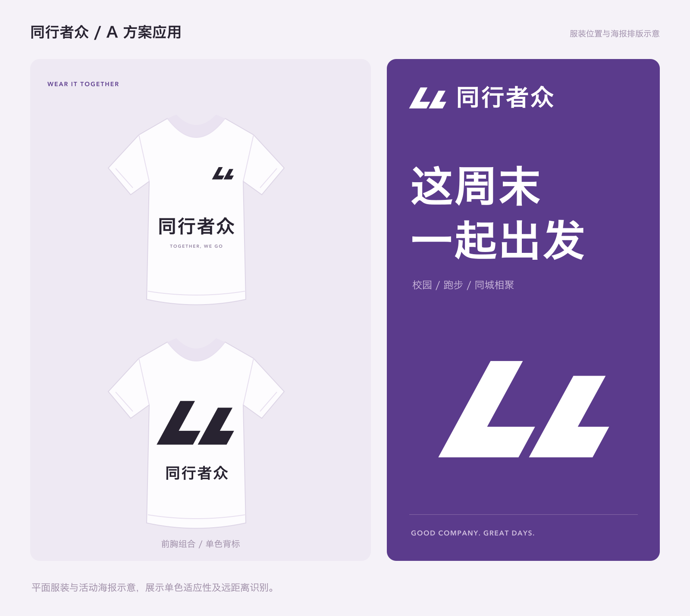
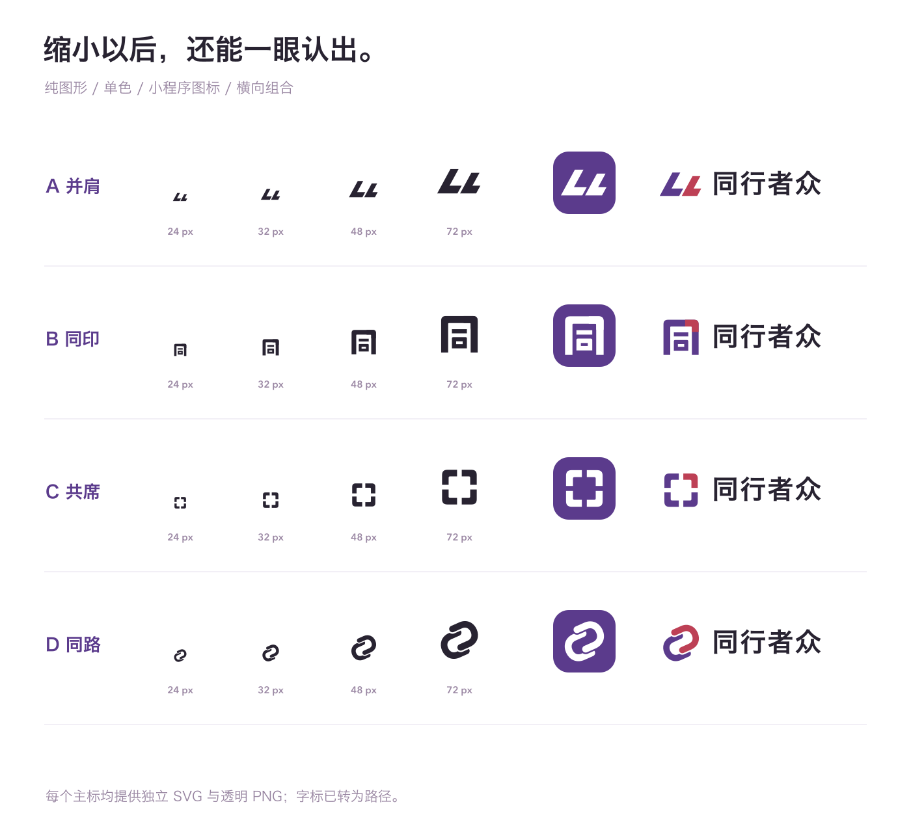

把紫色与红色的缘起留下，把山野、跑步、校园与同城相聚装进一个更简洁的标志。四种不同构图，看看哪一种最像你心里的同行者众。
「同」直接与品牌名相连，放进小程序头像或印在服装上都更稳重，后续扩展到电影、社团、团建也成立。A 的运动气质更强；C 更亲近；D 更强调路径与连接。下面展示 A、B 在活动服和海报上的位置与排版。


标志的识别不能只靠配色。以下按实际像素绘制 24、32、48、72 像素图形，并展示图标与横向组合。
